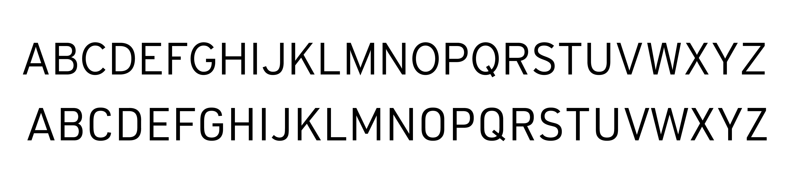
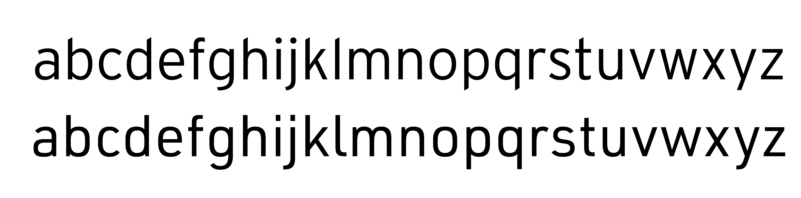
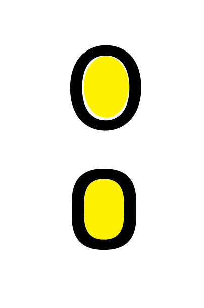
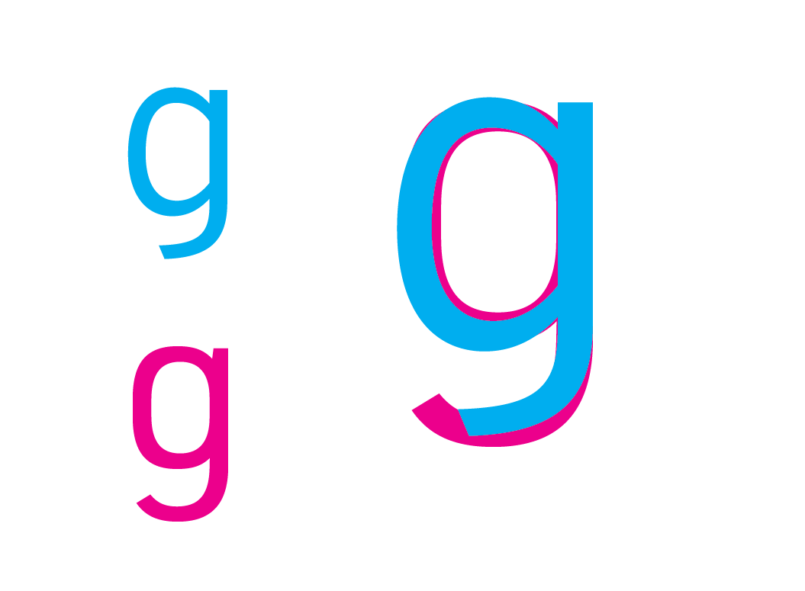

Designed by Tobias Frere-Jones in 1993, Interstate is a sans-serif typeface inspired by the typography found on American highway signs. Its name references the vast network of interstates across the United States. Frere-Jones crafted Interstate to capture the essence of American transportation systems, combining geometric precision with a sense of dynamism. The typeface's sturdy letterforms and generous spacing were optimized for readability at high speeds and in different weather conditions. Interstate's creation coincided with a resurgence of interest in minimalist and industrial design aesthetics in the early 1990s, making it a fitting choice for graphic designers seeking a more contemporary typeface. Since its creation, Interstate has become synonymous with efficiency, clarity, and forward momentum.
DIN
URW DIN, created by Volker Schnebel in 1996, is now an updated OpenType Pro variation of DIN 1451 (1931) with 48 different styles. Schnebel worked for Unternehmensberatung Rubow Weber, a type foundry formed in 1972 by Gerhard Rubow and Rudolf Weber. This foundry developed one of the first digital fonts using their in-house font editor Ikarus and later offered digitization services for other type creators, creating a large library of fonts. They would eventually go bankrupt in 1995 and were replaced by a new company by the name of URW++. The original typeface family that DIN URW was based on—DIN 1451—began as a typeface mainly used to identify railroad cars in Germany. DIN 1451 was created by the DIN Institute (Deutsches Institut für Normung), or German Standards Organization in English, to standardize German public signage, spaces, official documents, and other channels of public communication. DIN is known for its clean, geometric forms and uniform stroke widths, optimal distances and angles, ideal for legibility and readability especially in wayfinding systems.
Comparison
Similarities
Both DIN and Interstate are sans serif typefaces, originally developed for the public spaces and signage.
DIN and Interstate have similar lowercase x-heights.
Both type families have uppercase G’s that don’t have a vertical bar extension.
Both type families have capital H’s with centered crossbar placement.
Lowercase q’s have straight descenders without curved tails.
Both type families have minimal contrast or stress.
Differences


Interstate “Regular” has a heavier type weight than DIN. When DIN and Interstate families are compared at their Regular weight variation, DIN appears thinner than Interstate.Interstate has diagonal ends at ascenders, descenders, and terminals of their letters, whereas DIN maintains straight ends parallel to 90- or 180-degree lines.

DIN uses larger or more elliptical counters compared to Interstate. Therefore, DIN also has slightly larger apertures compared to Interstate.

Interstate bowls are “cut off” by stems.Interstate has a circular tittle while DIN uses a square tittle to dot their i’s and j’s.The vertex of Interstate’s uppercase ‘M’ extends to the baseline while the vertex of DIN’s uppercase ‘M’ floats above it.
Examples and visual references
Interstate
In his Hprtkst series, Dutch media artist Dirk Vis creates animated and interactive e-poetry. His most recent work is Password Marco Polo.
A poem in the form of an interactive landscape. Bikes, letters and the thoughts of a train traveller glide by.
The typeface is Interstate Black. Although FB Interstate is accompanied by four pi fonts with highway signs and related symbols, the pictograms and dingbats used here stem from other sources. Most of them are taken from Microsoft’s Webdings. The manicule can be found in Wingdings.The logotype is based on Interstate, with a modified ‘t’ to better suit the umbrella handle and a circular ‘c’ in place of the typeface’s oblong letter. Citibank uses Interstate for supporting type in all their branding.No Tech-Zone is a disruptive art project by Ivan Cash meant to raise awareness of the way pervasive internet access has occupied parks and other previously tech-less areas. To emulate San Francisco’s existing parking and regulation signs, Cash used Compressed and Condensed widths of the Interstate family, which is based on the FHWA typeface (Highway Gothic) used by the city’s parks and recreation department.
DIN
The built-in apps in Apple’s newly announced iOS 7 use Neue Helvetica almost entirely. This is not a change from previous versions of the OS (other than a system-wide switch to lighter weights), but the typeface is all the more front-and-center in iOS 7 now that the depth, chrome, and button outlines have faded away. There are a couple of exceptions from this Helvetication, however. One is the Newsstand app icon, and another is in the UI for the new Camera app. While the rest of the system uses Helvetica for buttons and navigation, settings in the Camera app are conspicuously exempt from the overarching style. At the moment, the type appears to be a slightly modified DIN 1451 Mittelschrift. The Tokyo 2020 Games emblem is the outcome of an open competition, totalling almost 15,000 design entries. The selected emblem was designed by Asao Tokolo and references a chequered pattern dating back to Edo period, known as “ichimatsu moyo”. The “Tokyo 2020” word mark is set in a version of DIN 1451, with what appears to be some mechanical condensing. Another DIN interpretation, Monotype’s DIN Next, was used for the cherry-blossomed candidate city emblem.The urban look of the DIN typeface lends a modern and distinguishable look to a film poster about Wall Street in one of the largest urban cities in the world. The poster uses FF Din and seems to play with the original tracking.
DIN was likely chosen for Forever 21's logo as it communicates the brand in a timeless and modern way, eschewing the more decorative and contrasting typefaces used by other fashion brands. All caps helps emphasize the straight lines and blocky shapes created by the letters.